5 Coletas
Todos os trabalhos do laboratório começam com a coleta de material biológico, por isso é fundamental que essa etapa seja feita de forma correta para não prejudicar os processos seguintes. Muito cuidado deve ser tomado desde o planejamento da coleta até sobre as informações registradas.
No Nupgen realizamos diversas coletas de peixes, caramujos, macrófitas e até de água. O PELD é um projeto que facilita bastante este processo de coleta.
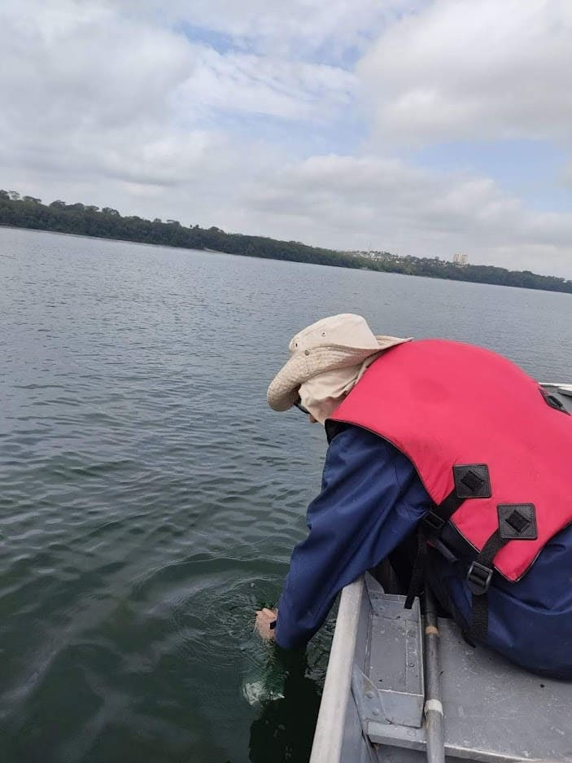
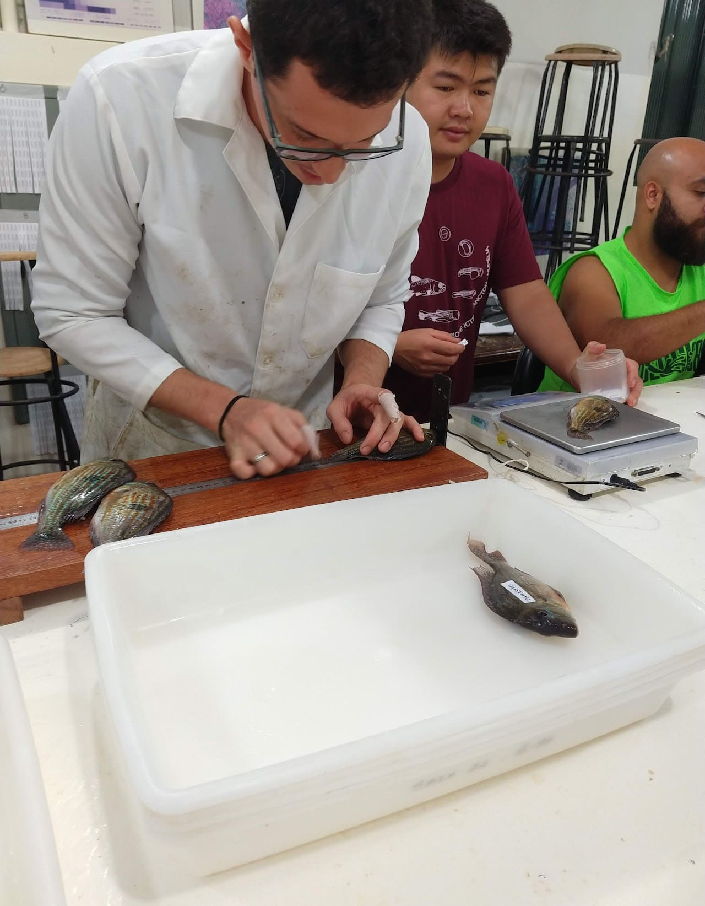
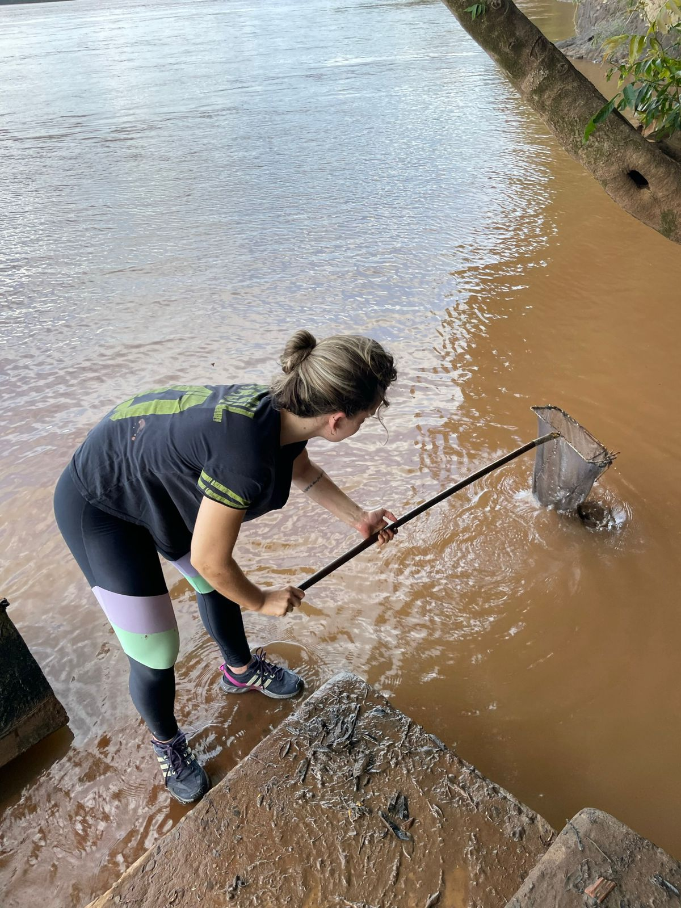
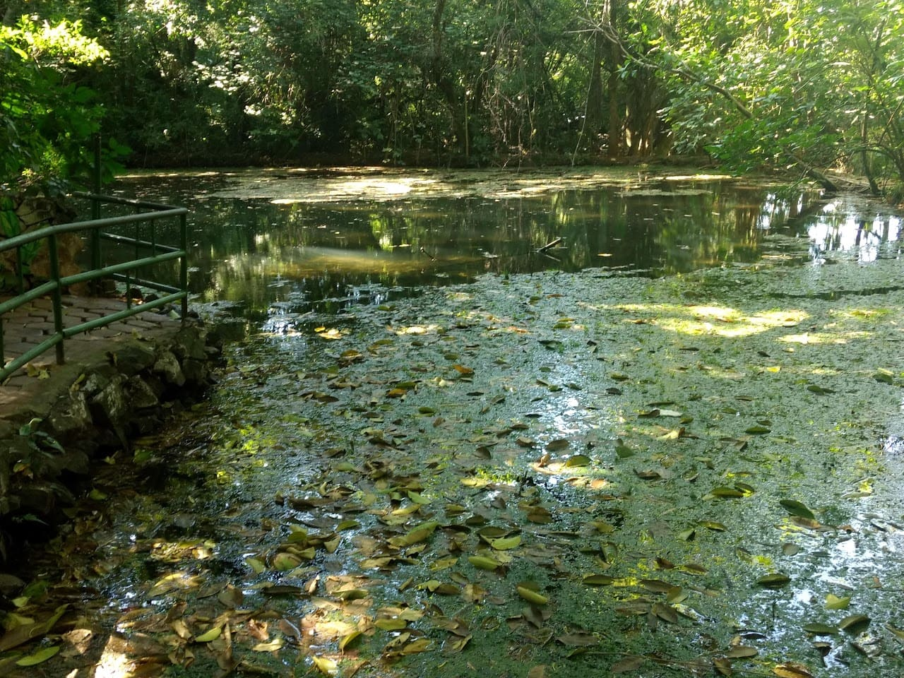
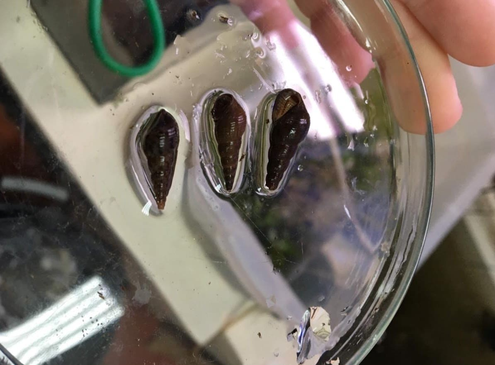
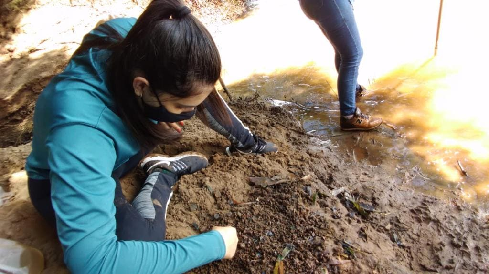
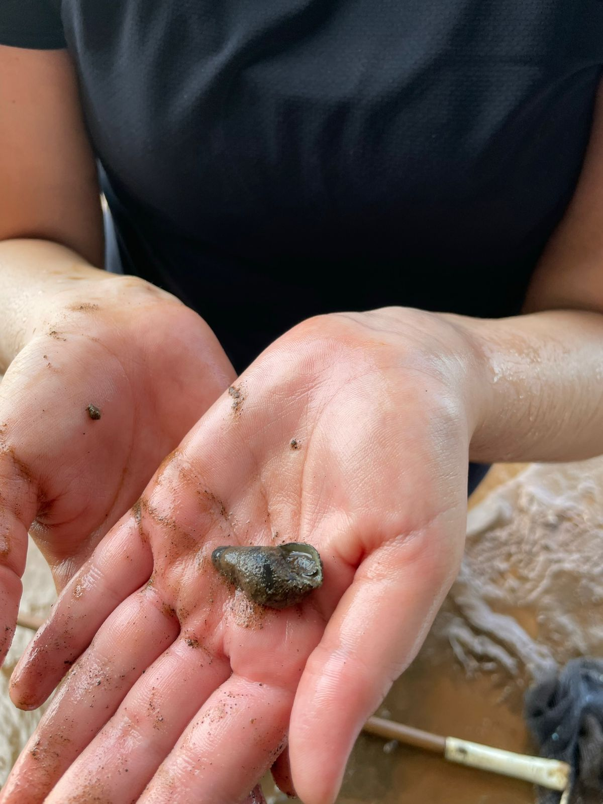
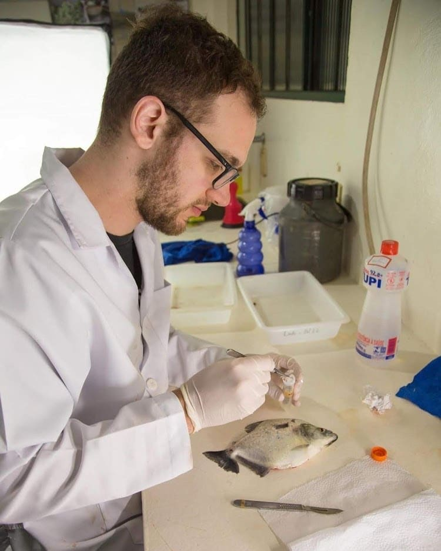
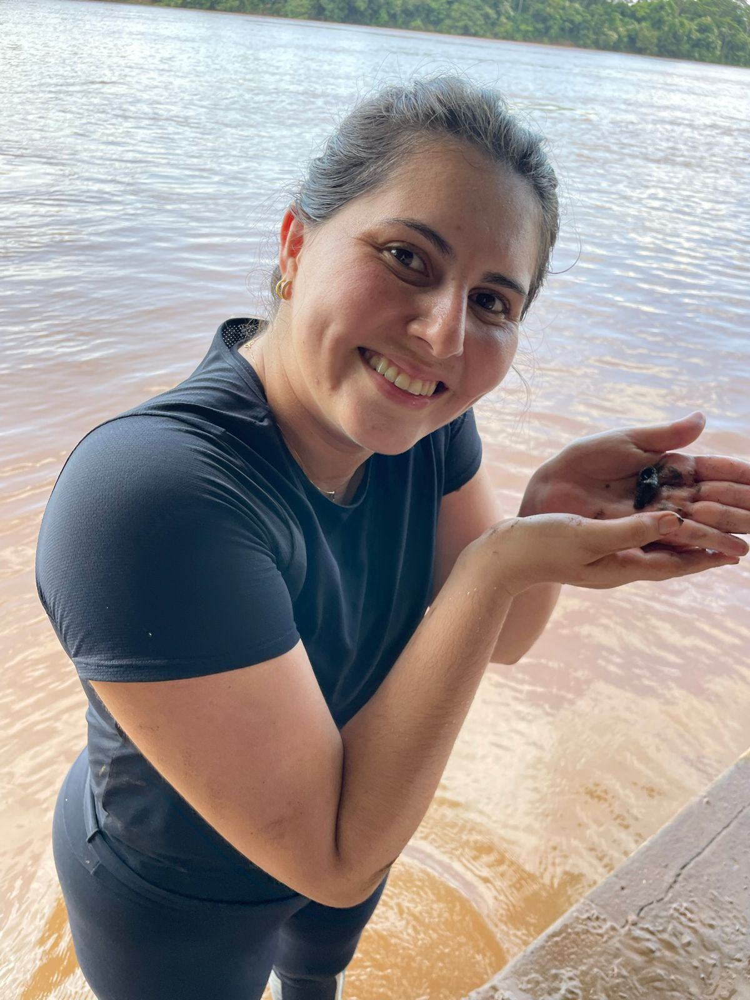
5.1 Campo
Toda viagem de campo é bem complicada, pois temos que fazer várias coisas com antecedência e não podemos esquecer nada.
Licença de coleta
Toda coleta de material biológico deve ter uma licença de coleta, pois retirar animais silvestres da natureza é crime. Por isso é essencial conversar com os professores responsáveis antes e providenciar. Leve a autorização impressa dentro de um saco plástico transparente para não molhar. O PELD já possui uma licença geral de coleta.
Local de coleta
Definir o local que será realizada a coleta é muito importante, pois quanto melhor o local, menos esforço amostral será necessário e, consequentemente, menos dinheiro será gasto. Converse com outras pessoas que já realizaram coletas no mesmo ambiente previamente.
É muito importante conhecer o ponto de coleta, bem como planejar a infraestrutura, alimentação e quantas pessoas serão necessárias.
Preparação para viagem
5.2 Dados
Em qualquer coleta deve ser registrado o maior número de dados possível, afim de facilitar o trabalho futuro ou mesmo para prever possíveis questionamentos de revisores. Alguns dados muito importante são:
Coordenadas;
Espécie coletada;
Número de espécimes;
Local;
Fotos e descrição do ambiente;
5.3 Triagem
Após coletar os espécimes, é necessário realizar a triagem para garantir a qualidade do estudo. Com caramujos geralmente são triados os parasitos, com peixes podemos retirar o tecido, etc.
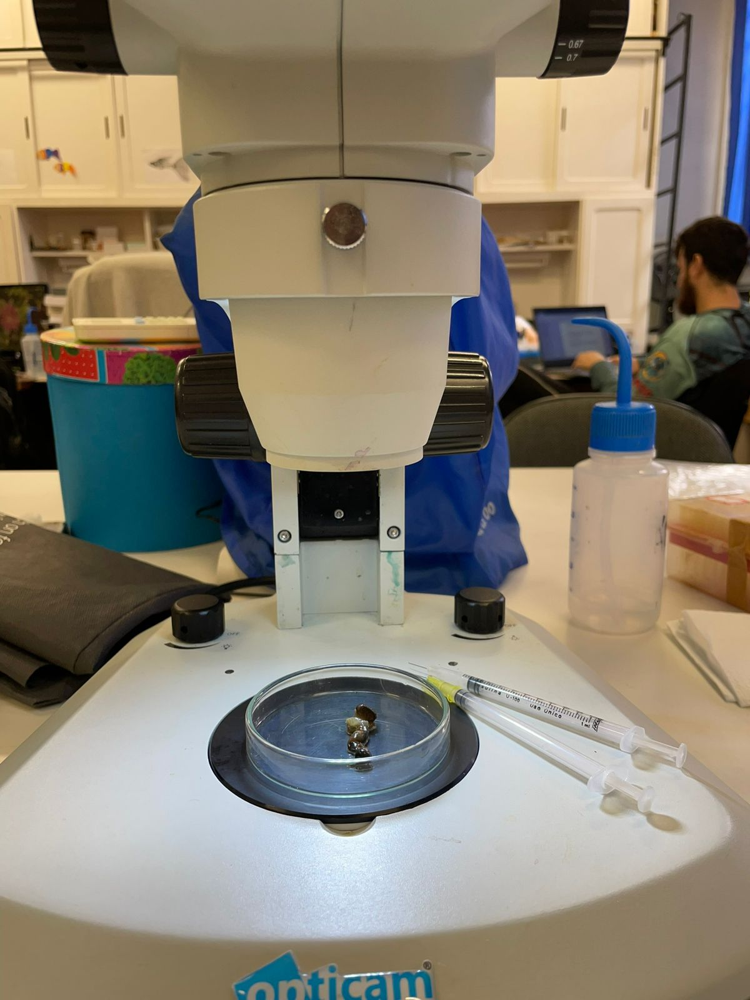
5.4 Protocolo de coleta de tecido de peixe - PELD
Materiais
Tubos eppendorf com aproximadamente 1 mL de álcool 92,8% ou absoluto numerados (é mais indicado utilizar papel vegetal escrito com caneta nanquim dentro do tubo);
3 Bisturis com 5 lâminas;
4 pinças de tamanhos diferentes;
1 tesoura;
1 litro de álcool 92,8% ou absoluto e 1 funil;
5 pares de luvas;
Toalhas de papel
Procedimento
Colocar um papel absorvente embaixo para colocar o peixe;
Colocar o peixe sempre com a cabeça para o lado direito antes de retirar o tecido;
Coletar tecido com cerca de 3cm de largura e 1 a 2 cm de altura da região latero-dorsal como apresentado em vermelho na figura abaixo;
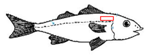
Com uma pinça, retirar o tecido que foi cortado;
Armazenar em tubos com álcool absoluto devidamente etiquetados;
Informações que são importantes anotar: número do PELD/número do peixe; data; provável espécie; ambiente/localidade/subsistema. Exemplo: TUC 1 – 20601 – Cichla kelberi – Lagoa dos patos
Antes da utilização, os utensílios (pinça, bisturi, lâminas etc.) devem ser autoclavados;
Tomar cuidado ao abrir as lâminas e colocar no bisturi, sempre colocar e remover as lâminas com o auxílio de uma pinça;
Entre cada peixe, antes de retirar o tecido, limpar bem com álcool e flambar a lâmina do bisturi e a ponta da pinça (mergulhar no álcool e acender o isqueiro).